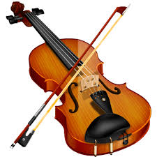

Keman Hakkında
Keman, tarihsel kökenleri oldukça eskiye dayanan, yaylı çalgılar ailesinin en önemli üyelerinden biridir. Kemanın gelişimi, Orta Çağ’dan başlayarak, Rönesans ve Barok dönemlerine uzanan bir süreç içinde şekillenmiştir.
İlk Dönemler
Kemanın atası olarak kabul edilen çalgılar, M.Ö. 2000 yıllarına kadar uzanan antik uygarlıklara kadar gidebilir. Orta Çağ’da Avrupa’da yaygın olarak kullanılan çalgılar arasında "rebab" ve "viola da gamba" gibi çalgılar bulunmaktaydı. Bu dönemlerde, çalgıların tasarımında ahşap gövde ve tel yapısı ön plandaydı.
Rönesans Dönemi
Kemanın doğuşu, 15. yüzyılda İtalya'da gerçekleşti. Bu dönemde, "violin" adı verilen çalgıların ilk örnekleri ortaya çıktı. Andrea Amati, bu çalgıyı ilk sistematik şekilde üreten luthierlerden biridir. Amati, kemanın formunu geliştirerek onu daha müzikal hale getirmiştir. Onun torunları, özellikle Nicolò Amati, kemanın yapımında standartları belirlemiş ve bu çalgının estetik ve akustik özelliklerini mükemmelleştirmiştir.
Barok Dönemi
17. yüzyılda, keman popülaritesini artırarak, Barok müziğin en önemli enstrümanlarından biri haline geldi. Bu dönemde, Heinrich Biber ve Antonio Vivaldi gibi besteciler, keman için eserler yazmaya başladılar. Keman, hem solo performanslarda hem de orkestralarda başrol oynamaya başladı. Barok dönemi, kemanın teknik olarak gelişiminde de önemli bir aşama oldu; yay tekniği ve parmak pozisyonları zenginleşti.
Klasik Dönem
Klasik dönem (18. yüzyıl) ile birlikte keman, özellikle Joseph Haydn, Wolfgang Amadeus Mozart ve Ludwig van Beethoven gibi besteciler tarafından daha da ön plana çıktı. Bu dönemde, kemanın teknik repertuvarı genişledi ve virtüözlük ön plana çıkmaya başladı. Keman için yazılan konçertolar, bu dönemde zirveye ulaştı. Keman yapımında ise Antonio Stradivari ve Giuseppe Guarneri gibi ustalar, yüksek kaliteli enstrümanlar üreterek bu çalgının ses kalitesini ve estetiğini yükselttiler.
Romantik Dönem
19. yüzyılda, keman virtüözlüğü daha da yaygınlaştı. Paganini gibi sanatçılar, teknik ustalıklarıyla kemanın sınırlarını zorladılar. Bu dönemde, keman için yazılan eserler, duygusal derinliği ve teknik zorluğu ile dikkat çekti. Brahms, Tchaikovsky ve Sibelius gibi besteciler, keman konçertoları ile bu çalgıyı daha da yüceltmişlerdir.
20. Yüzyıl ve Sonrası
20. yüzyılda, keman sadece klasik müzikte değil, aynı zamanda caz, folk ve pop müzikte de önemli bir yer edinmeye başladı. Yeni teknikler ve tarzlar, kemanın icra biçimlerini çeşitlendirdi. Günümüzde, keman eğitimi ve performansı dünya genelinde oldukça yaygın olup, birçok farklı stil ve teknikle birlikte gelişmeye devam etmektedir.
Kemanın Günümüzdeki Yeri
Günümüzde keman, klasik müzik orkestra ve topluluklarının vazgeçilmez bir parçası olmanın yanı sıra, solo performanslarda da sıkça kullanılmaktadır. Modern besteciler, kemanı farklı müzik türlerinde kullanarak, bu çalgıyı sürekli olarak yeniliklere ve denemelere açık hale getirmiştir. Ayrıca, keman eğitiminde de çeşitli yöntemler ve yaklaşımlar geliştirilerek, daha geniş kitlelere ulaşması sağlanmıştır.
Sonuç
Sonuç olarak, keman, tarihsel ve kültürel gelişimi boyunca birçok farklı dönemden etkilenerek, günümüzde de varlığını sürdüren zengin bir müzik enstrümanıdır. Hem teknik hem de sanatsal açıdan büyük bir derinliğe sahip olan keman, hem geçmişin hem de geleceğin müziklerinin önemli bir taşıyıcısı olmaya devam etmektedir.